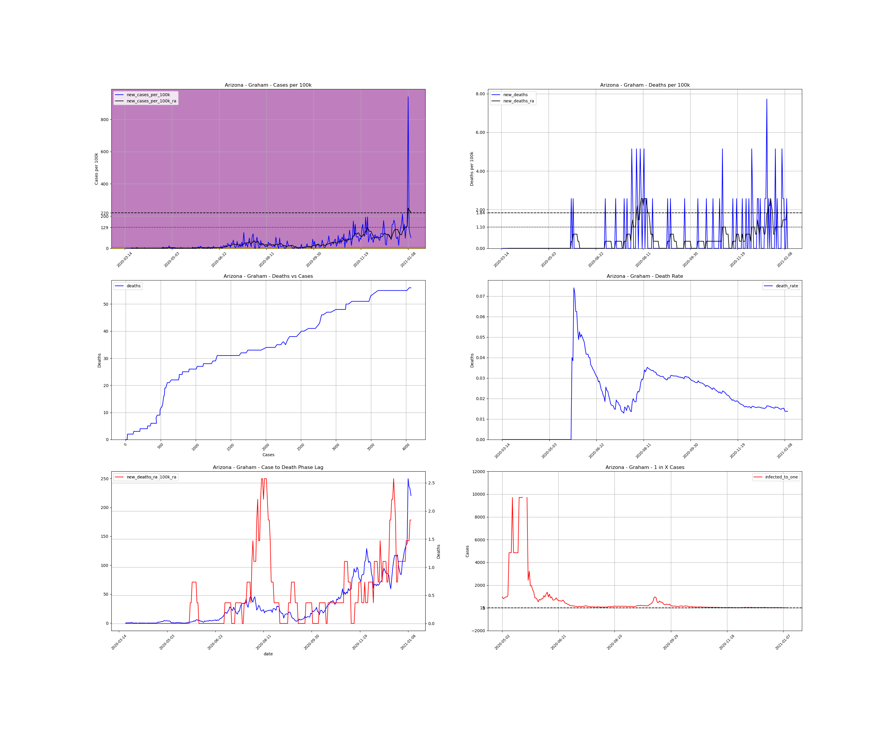
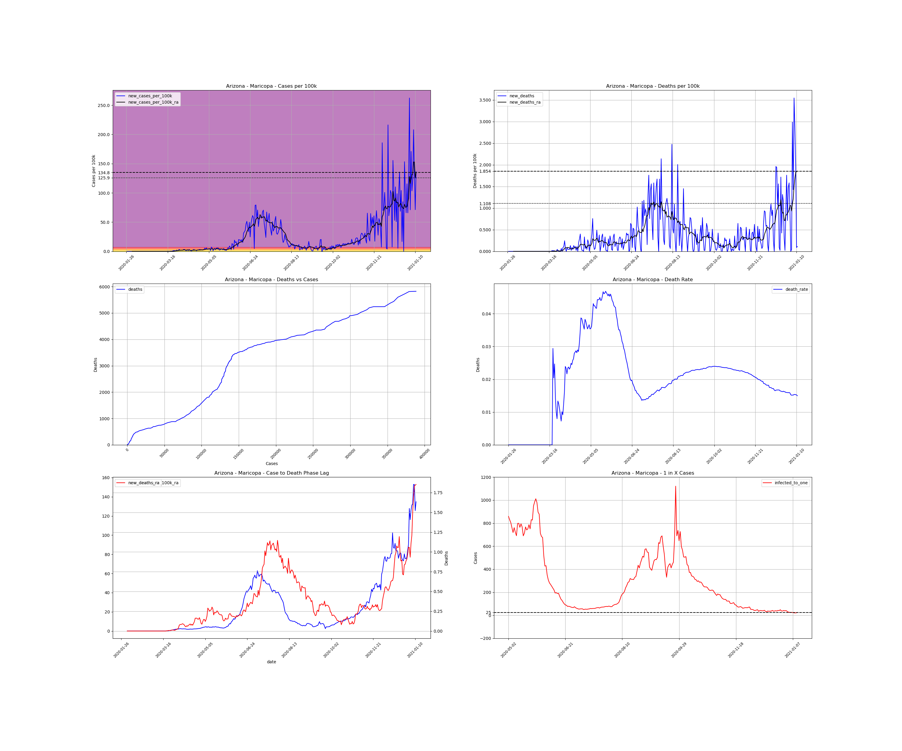
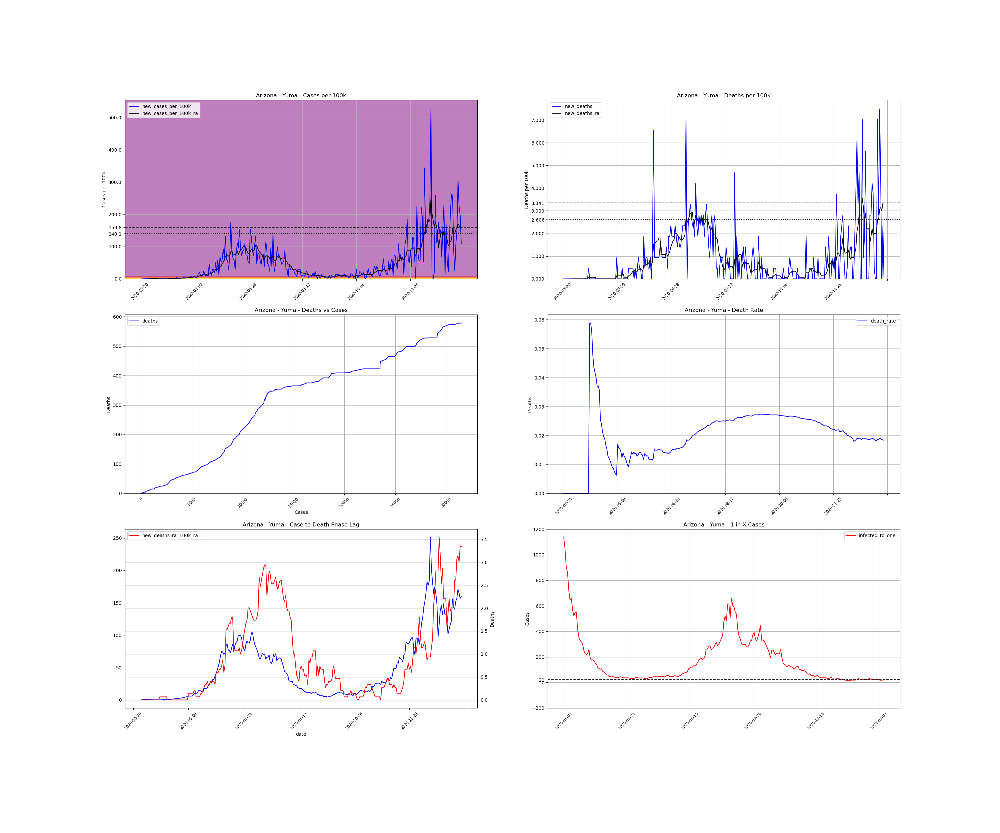

<h1>Arizona Counties</h1><table><tr><td><a id="#Apache">Apache</a></td></tr><tr><td><a id="#Cochise">Cochise</a></td></tr><tr><td><a id="#Coconino">Coconino</a></td></tr><tr><td><a id="#Gila">Gila</a></td></tr><tr><td><a id="#Graham">Graham</a></td></tr><tr><td><a id="#Greenlee">Greenlee</a></td></tr><tr><td><a id="#La Paz">La Paz</a></td></tr><tr><td><a id="#Maricopa">Maricopa</a></td></tr><tr><td><a id="#Mohave">Mohave</a></td></tr><tr><td><a id="#Navajo">Navajo</a></td></tr><tr><td><a id="#Pima">Pima</a></td></tr><tr><td><a id="#Pinal">Pinal</a></td></tr><tr><td><a id="#Santa Cruz">Santa Cruz</a></td></tr><tr><td><a id="#Yavapai">Yavapai</a></td></tr><tr><td><a id="#Yuma">Yuma</a></td></tr></table>